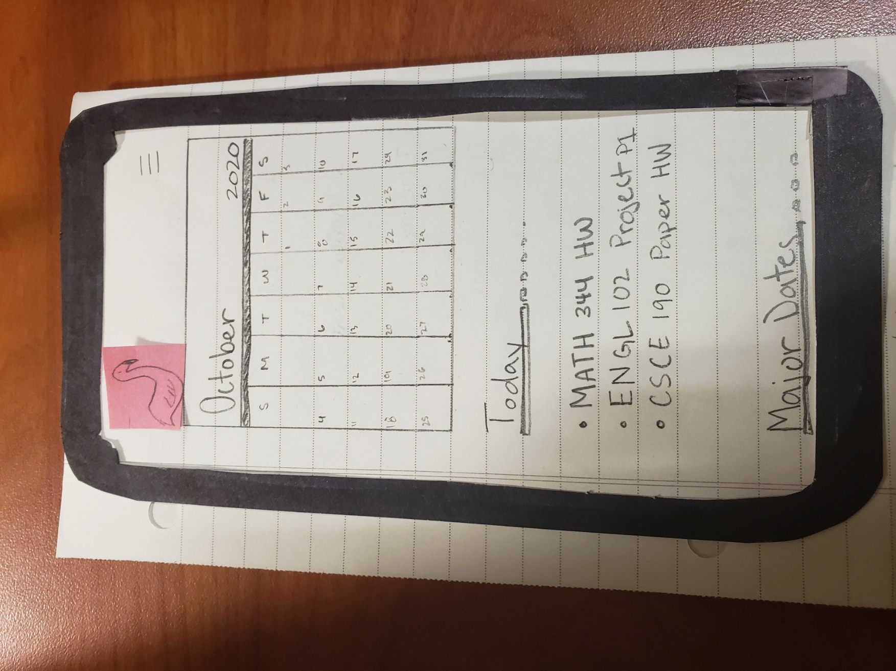

Problem Statement: UofSC Schedule Planner
Hard working students need an effective and simple way to plan their schedules to improve their time management and organization.

Affinity Diagram
My group and I came together on multiple days to brain storm ideas for our UofSC planner idea!
Personas: 4 Personas for UofSC Schedule Planner
Four personas of a typical UofSC Schedule Planner user.

StoryBoards: 4 Storyboards of a UofSC Schedule Planner user
Four comic strips that illustrate the need for the UofSC schedule planner.
Sketches: UofSC Schedule Application
A couple of sketches outlining some solutions to our schedule app.
Paper Prototype: UofSC Schedule Application
A functional prototype on paper.
Usability Testing: UofSC Schedule Application
A scenario and tasks and the outcome of usability tests.
Proto.io: UofSC Schedule Application
A prototype built on Proto.io of the app and it's functions.
Proto.io: Hi-Fi Prototype UofSC Schedule Application
A prototype built on Proto.io of the app and it's functions but this time with them colors. I was going to make the calandar clickable, but my free trial ended.

Proto.io: Hi-Fi Prototype UofSC Schedule Application
A demonstration of the Prototype presented by Gregory Elsey.